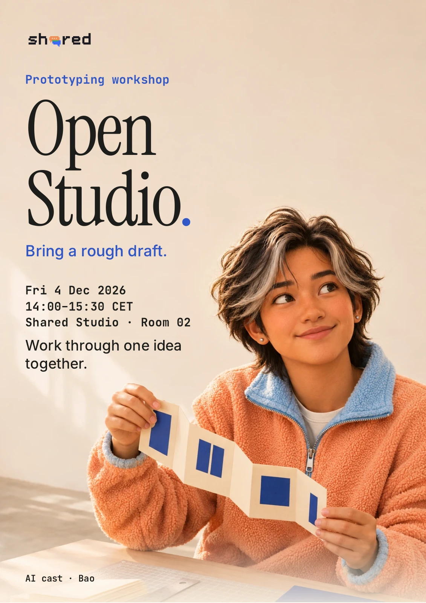

Software & creative · Prototyping workshop
Open Studio

Open full-size posterRead event details
Bring a rough draft.
Work through one idea together.
- Date
- Friday, 4 December 2026
- Time
- 14:00–15:30 CET
- Venue
- Shared Studio · Room 02
- Host
- Shared Studio
 Keanu
Keanu Anouk
Anouk Layla
Layla Sakina
Sakina Andrej
Andrej Aissatou
Aissatou Min
Min Amara
Amara Ploy
Ploy